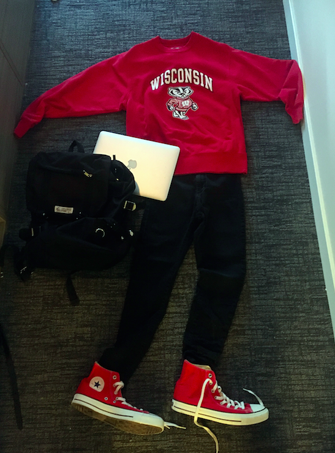
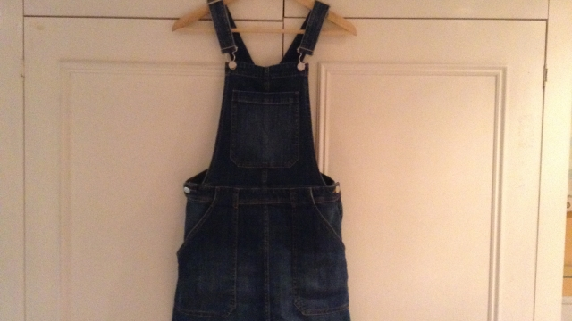
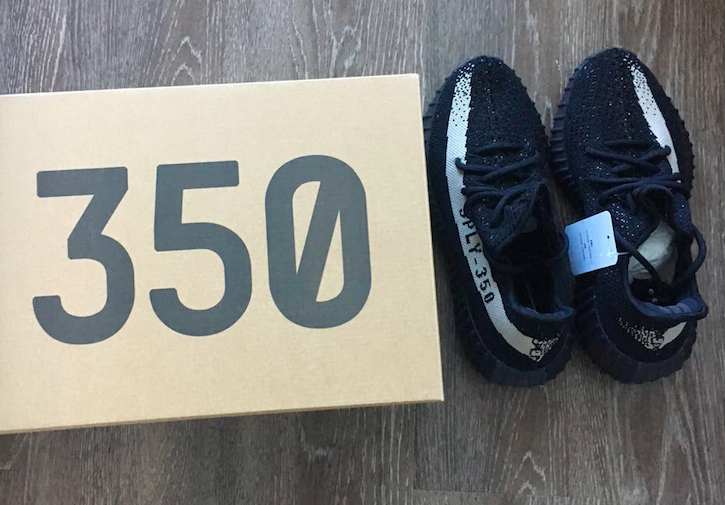

My style
One question we need to think about every single day is what to wear. Some people might ask "Is it important to wear new clothes every single day?" My answer would be "No". As long as your outfit shows your style, who you are or you feel comfortable with it, that's enough :)


Sweatshirt plus jean could be one of my favourite style. Sweatshirts can come with many different shapes and colors. I bought a lot of black and white sweatshirts with simple cartoon or pictures on them. One of my favourite brand is Moschino. It sells really really cool sweatshirts, but usually a little bit expansive. Therefore I usually wait until Thanks giving, at that time you can get 50 % off. For Jeans, I really recommend Gap and Levi's, comfortable to wear and also look great:) When I get nothing to do, I enjoy just watching those brands' websites to see their design and creativity behind.

There's a current fashion trend for pinafores and dungaree dresses going on at the moment. Walking around the shops I've seen them everywhere in all sorts of styles and colours. I saw a dungaree dress at a shop just round the corner from my apartment in France and fell in love with it. I tried it on in the shop and found it fit perfectly so I saved up my money to buy it!
My favourite thing about the dress is that it has lots of pockets so it's really convenient to wear around and about because it means sometimes I don't even need to take a bag with me. I also get lots of compliments from my friends whenever I wear it, which is always a good confidence boost. What's funny is that this fashion trend is very similar to what people wore back in the 1990s, in fact I've even found some old photographs of myself from when I was little wearing a similar dress. It's amazing how trends come back into style and we start wearing things that were fashionable 20 years ago. I really hope this is a fashion trend that's here to stay as I love wearing my dress so much!

Yeeze Boost 350 is Kanye West Designed Low-Top Sneakers. It is a very hot type of shoes that can be sold out within only 2 hours. This year, I waited online for half hour and finally got one. I bought it for 220 dollar and guess what? It can be sold by 500 dollar on eBay. That's kind of crazy...
I also prefer classic styles like blouses and shirts with collars, straight leg slacks and jeans, pencil skirts, A-line or sheath dresses, and jackets to hide my middle section. Most of my clothing is of neutral colors except for my blouses and shoes which are mostly bright colors like turquoise, pink, cobalt blue, and red, many with patterns-- yes, on the shoes, also. I also love the black and white look. Whatever I wear, I try to keep it easy and make sure that every piece I own can be worn as part of several different outfits. The TV show What Not to Wear has really helped me cut my clothing budget and always have something in my closet for just about any occasion. Unfortunately, my waistline doesn't always cooperate and I find myself sizing up from time to time:(
I really want to share with you 11 Tips about creating your own style
1.Evaluate your closet.

Go through what you already own and decide what you like. Pieces that you keep should have a fit that's flattering to your body, as well as an overall look that blends with your shape. Throw out or donate anything that fits poorly or that you're hesitant to wear out of the house. A good rule of the thumb is that if you haven't worn it for 6 months (barring seasonal items such as sweaters for winter or swimsuits for summer), get rid of it.
2.Pick out the elements that you like.

On the clothes that you do keep, evaluate what exactly it is that makes you like to wear them - such as the cut, the sleeves, the embellishments, or the color. Write down a list of these elements and take it shopping with you later.
3.Look for inspiration.

One way to foster and develop your own style is to find out what looks good on other people. Leaf through magazines or watch TV for trends that catch your eye. If people often compliment you on looking like a certain celebrity, search their name online and see what they wear to compliment their coloring and size. Alternatively, visit crowded places such as malls or downtown sidewalks. Observe what people are wearing, and take note of fashions you like.
Consider incorporating elements of subculture fashion into your wardrobe. Some subcultures promote unique fashions that reflect a certain lifestyle. You don't have to go all-out and adopt an extravagant, outlandish look based on a specific subculture, but you can look to them for inspiration. For instance, perhaps you like the bell-shaped skirts that gothic lolitas wear, or the flight jackets favored by skinheads. When you see something you like, small ways to bring some element of it into your wardrobe.
4.Ask for help

If you're having a hard time finding inspiration, or you worry about having bad taste, ask for an outside opinion. Contact a close friend or family member whose sense of style you admire, and ask him or her what might look good on you. Or, visit a department store or boutique that carries fashions you like and ask a salesperson to help you assemble a stylish look that's right for you.
Don't be afraid! It can be difficult to ask for help. Remember that most of your friends and family members will want you to feel as good as you can in your clothing. Also, most people who work at clothing stores love to help people find the right look and will be eager to help you.
5.Don't forget shoes

A new pair of shoes can add a different flair to your look. Look for something you can wear often and that fits with the general look you're trying to achieve. Not only what kinds of shoes but also the color should be pay attention to.
6.Go shopping

When you've decided what you like, start shopping. You don't have to replenish your wardrobe all in one go - instead, consider shopping at small intervals, such as every few weeks, until you've assembled a closet you like. Visit thrift or consignment stores, malls, outlets, boutiques or department stores, or shop online.
Shop with a friend who is not afraid to offer gentle (but constructive) criticism with you while you shop. This way you, will get an honest opinion of your style.
Shop off-season. Ease some of the strain on your budget by shopping off-season. For instance, buy shorts and swimsuits in the fall, or sweaters in the spring.
7.Find a good tailor or seamstress (optional).

Find a good tailor or seamstress (optional). Clothing sizes are designed to fit the masses, and therefore might not fit you as well as you'd like. If you find a piece you love but the fit is lacking, take it to a tailor or seamstress for alterations. Most everyday-wear fabrics can be altered fairly cheaply, and the price will be worth the confidence boost that comes with wearing clothes that fit well.
8.Accessorize.
Punch up your regular look by adding a few interesting accessories. This can be as simple as buying clean laces for your shoes, or wearing a muted belt. If you really want to alter your look, try adding jewelry, scarves, hats or hair pieces.
Embellish what you already own. With a little sewing skill, you can add ribbons, beads, embroidery, clasps, appliqué or other notions to your clothes. Visit your local craft store for ideas and supplies.
9.Mix and match.

Try pairing different pieces for a compelling, unique look. For instance, even if you didn't think your new tank would look good with your capris, try it out. Maybe all you need to pull the whole outfit together is that belt you haven't worn since last summer.
10.Change your hairstyle.

True, your hairstyle isn't part of your clothing, but it can drastically alter how your clothing looks. Try styling your hair a different way in the morning, or see if a new shampoo or product helps it look better. If you're going to try a radically different cut or color, consult a stylist as to what might look best on you. Find images in magazines or online for inspiration, and take them to your appointment.
11.Be yourself.

The most important thing about your new look should be that it makes you feel great. Creating a personal style is really just wearing what you want. Think more positively and be more constructive and expressive with your ideas and abilities.
2016 Ariel. Don't steal.